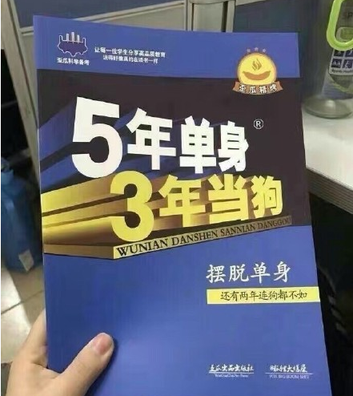

今年,我和老婆己经认识十年了,三年恋爱,七年婚姻,仍然保持着恋爱的新鲜感, 让身边的朋友羨慕不已.
许多还在单身的MM和我们接触后,就有想快点找个人嫁的冲动. 许多朋友问我们怎么结婚七年了还这么好?于是开始总结一些婚姻生活中的点点滴滴. 每对恋人或夫妇的性格和相处方式其实都不一定相同,以下内容可能适合,可能不适合. 祝愿全天下有情人都能找到自己的幸福!
婚后一定要时刻把结婚戒指戴在左手无名指上!佩戴结婚戒指明确表明了你的婚姻状态, 同时也明确表明了你拒绝外来诱惑的坚定态度.
两人出去参加饭局的时候,看到喜欢的菜,又不好意思夹太多次的时候,可以互相夹给对方吃.
经常参加另—半的朋友聚会.这样可以扩大社交圈,也可以增加许多共同的话题.
单独在外要经常把另一半挂在嘴边.
两人吵完架后,可以互换角色再重复一遍刚才吵架的内容,保准你们笑破肚皮!(觉得这条很好用,哈 哈,下次试试)
从很久以前幵始谈话中"我们"出现的次数超过了 "我"的次数.
在心爱的女人面前,越贱越快乐!
男人工作再忙也要承担一点家务,这是对家庭的责任.像我,负责洗碗,洗衣眼,倒垃圾,锁门, 拿报纸这顺常规任劳,还有许多临时任务,最多的临时任务就是找东西. 许多人都讨厌洗碗,而我別喜欢洗碗.看着—堆油腻的脏碗逐渐被干净很有成就感.
在她洗澡的时候悄悄帮她把拖鞋换个方向,要刷牙的时候帮她把牙胃挤好漱口水倒好, 平时生活上的举手之劳虽然小,但是能一直让让她感到温暖和贴心.
和同事朋聊天的时候(特别是异性),要经常把另—半挂在嘴边,亲身体会事实证明,可以与桃花绝缘.
有空不妨参与另一半的工作,比如帮忙上网找资料,整理整理东西.一方面可以两人合作做点事情, 另一方面了解另一半的工作,可以增加许多话题.
夫妻之间不需要隐私!我们的电子邮件,msn,QQ,阿里旺旺的密码互相都知道, 有时需要帮忙收发邮件很方便,手机也经常互相借用.心里坦荡荡,有什么不能让方知道的呢?
副驾驶的位子是老婆的专座,除非老婆批准,别的异性只许坐在后排.
和朋友聊天,得出这样的结论:女人喜欢给家里顶下许多规矩.例如毎块毛巾的职责是什么, 洗完澡一定要把水迹擦千净,上完厕所一定要把马桶盖盖上…一旦没有遵守, 就会说:和你说过多少遍了?怎么又XXX ?
身为男人,应该有这样的自觉,如如安排有变,比如说要加班,或是临时有约,必须要打电话 报备一下.
有觉得有趣的两人的对话或事情,不妨记录下来,日积月累,每隔半年或一年翻出来一起看看, 重温一下快乐的时刻,乐趣无穷.
昨天堵在南北高架的时候听电台,话题是道歉. 有个听众来信说每次她一生气,老公就装身体不舒眼,弄得她也不好发作,老公接着道歉, 气就消了.听了不禁笑了,我也做过这种事,还挺管用.不过不能多用.
还在单身的女人不要抱怨怎么总是找不到成熟体贴的男人,男人是要调教的. 也许有天生就很体贴,很有责任感,善解人意的男人,但是那是极少数,被你找到的几率是很小很小的. 大多数的男人是像我这样,脑子里少根筋.是靠老婆从谈恋爱的时候就开始不厌其烦, 苦口婆心经年累月地教导出来的.所以,不妨眼界放宽,找个可造之材幵始调教吧.
从小就被电视电影误导,觉得男主角如果事业未成,怕耽误了优秀的女主角而忍痛分手是很有责任感, 特自我牺牲,特酷的—种表现.错!错!错!为了事业牺牲爱情才是自私.结婚誓言里不是写得清清楚楚吗? 不论贫穷或富有,不论疾病或健康,都要在一起,这样的感情才经得起考验.如果等到你真的事业有成了, 那看上你的人是爱你,还是爱你的财富和地位呢?
有时候在msn的时候我帮她做了什么事,她说了句:"谢谢亲爱的".我顿时警觉起来, 怀疑老婆的账号被黑客盗用了,马上问一句,"你真的是XX吗?",老婆顿时怒:"滚!!".我这才放心.
要做有生活情调的女人.生活情调不只是爱打扮,在家里点个熏香而已. 是能够不断发现生活中的新乐趣,并且分享和感染周围的人. 老婆一直能发现生活中的乐趣,例如新的好餐馆,咖啡馆,插花,装修,旅游,找到好书, 认识新朋友…让我们的生活一直有新鲜感.
每天上班出门前(以前是我出门比她早,现在是她出门比我早)要和老婆吻别,这是一个好习惯.
介绍一个两人可玩的小游戏.只要—支笔,—张纸.轮流画东西让对方猜是什么, 但是要说明猜的东西的范围,是成语,人名,地名,还是事件等等.不要担心自己画画水平烂, 这与画画水平无关,而与联想能力有关.无聊的时候(坐火车坐飞机,平时在家也可以)玩, 很有乐趣的哦(这个我俩玩不了,我俩画画水平差太多啦,哈哈哈)
男人不要以为沉默很酷,两个人在还是要多沟通赚好.有什么想法,对对方有什么意见, 不要闷在肚子里,说出来对方才会知道,才有机会去改善.一个人生闷气只会越来越气,看 看对方一副毫无知觉的样子更气,对解决问题 毫无帮助.
谈恋爱,包括婚后,都需要很长一段时间去磨合的,小到生活习惯,大到脾气性格做事方式, 都需要慢慢调整适应,这个磨合的过程会伴随无数的争吵和眼泪,但是这个过程越到后面: 苦恼会越来越少,而幸福感会越来越强.我们恋爱三年,结婚七年,头七年可能都算磨合期, 直到现在偶尔还是有小小的摩擦,但是总体感觉非常幸福美满.所以,恋爰和婚姻中, 只要不是原则性的大问题,小吵小闹还是不要轻易分手,一定要有耐心,好日子在后头呢! 说到以前吵架比较多的时候,经常是在深夜,因为关了灯在黑暗中,精神就会集中在刚才发生的事情上面. 但是我是个沾上枕头就很容易睡着的人,经常是老婆在愤愤不平和我算账的时候忽然听到到边上传来我香甜的打呼声, 那叫一个怒啊!她就会凑到我的耳边,大喊一声:"睡吧!" (这个跟我俩很像,哈哈哈~经常我还在生气呢,等着他来哄哄呢,就听到人家熟睡的鼾声,相当郁闷)
介绍男士们一个道歉的方法.以前我犯了错,只会反复说"对不起", "我错了","原谅我吧". 老婆很不满意.后来她教我道歉三步曲:第一步,陈述事实,今天我犯了什么错, 第二步:说明理由,为什么会犯这个错,第三步,改正措施,以后有什么措施来确保不再犯同样的错. 实验多次,效果不错.
想起以前看到一个国外的调查,老婆最希望老公承担的家庭责任, 有一条排名很高的是去"去查一下晚上家里传来的奇怪声音".超有同感.
夫妻间最宝责的东西就是信任.说信任是"镇家之宝"也不为过.—旦—方有过背叛行为, 哪怕后来另一方原谅了,和好了,信任感也已经大打折扣了.猜疑,不安, 疑神疑鬼就会开始出现在两人之间.要获得彼此的信任,就要做到不玩暖昧,不玩消失,让彼此的行踪, 朋友,同事都大大方方地透明化.(我们做的都很好)
看事情不妨乐观点,遇到倒霉的事情心态也放平常一点.手机被偷了就想正好要换个手机, 钱包被偷了就想破财消灾;感冒了就想正好可以休患两天;遇到堵车正好可以想想心事,听听广插, 骂骂DJ;公司倒闭被遣散了就想终于可以开始创业,做自己喜欢的事了, 创业不顺利就想之前的30年人生太顺利了,有点起伏的人生才精彩. 孩子的幸福感,取决于父母的幸福感.为了孩子,两人也要努力营造幸福的小家!
喜欢两人开车去短途游,因为在路上,在一个封闭空间里,两人也不会看电视做家务,自然而然就会开始聊天. 没话题可聊?光是路上看到的东西就有许多可聊的.路上乱幵车的新手,奇怪的车牌号,不太见到的车子, 前面车子屁股上贴的标语,后座上的绒毛玩具,从后视镜里看到后面车上的司机在挖鼻屎,都可以聊. 还可以打幵收音机,听DJ在那里胡言乱语,猜想他/她是什么星座血型.
这两天不太顺利,我和老婆会去庙里烧烧香.以前我从小受无神论的教育,—点信宗教, 宗教的书碰也不碰.近年来读书多了,觉得自己以前才叫迷信,你要批判一样东西, 先要了解那样东西才有资格.接触了一些佛教的书籍以后,觉得佛教与其说是一种宗教, 不如说是一种心态,一种信仰,教你看淡人生中的起伏,在虔诚祈愿的时候,坚定的信心也能帮助你达成心愿. 要做成一件事,最重要的是自己要有信心,能坚持,不是吗?
再介绍两人能玩的游戏,什么道具都不需要.在心里想一个两人都知道的人物的名字, 然后让对方提问来猜,提问只能是"是"或"不是"的问题.例如,是男人吗?是中国人吗? 是娱乐圏的人吗?轮流猜,然后看谁猜出来用的问题最少.(这个我们总玩,效果不错哦)
老婆很爱喝红酒.我觉得女人可以适当暍点红酒.一,对健康好,有利于心血管,睡前暍一点还帮助入 睡;二,可以美容养颜,三,懂一点红酒知识的女人会让人刮目相看,四,平时又多了样消遣, 两人可以时常去泡吧听音乐;五,增添女人的爽朗气质.
以前刚谈恋爱的时候,每天晚上老婆要听着我讲的故事才能睡着.一开始还挺得意, 后来老婆告诉我:"你讲的故事很无聊,所以很快就能睡着.如果故事很精彩,就睡不着了"(可爱呀, 呵呵)
我对老婆印象最深刻的记忆是,有一次夜里家里厕所水管爆了,我正手足无措, 犹豫是关水龙头还是关总闸的时候,穿着睡衣的老婆已经一手提一个拖把冲进厕所来了. 那个刹那,我脑子里就只有一个念头:"娶老婆,一定要娶这样的女人."
两个人的性格,兴趣爱好,生活习惯不同都不是大问题,可以慢慢调到彼此适应对方, 但是大方向的价值观是否—致决定了婚姻是否能幸福长久.你们能接受的道德底线是什么? 为了事业能够牺牲些什么?为了家庭能够牺牲些什么? 这些不—定要正式讨论,通过日常的相处观察也能看得出来.
"婚姻是爱情的坟墓."这句话是送给不善经营婚姻的人的.如果两个人都用心浇灌爱情之花, 它能够长成一棵参天巨树,不仅让自己得到快乐和幸福,也把幸福的绿荫带给周围的人.
全文完
如果你都看到这里了,你太了不起了!居然看完了这么长的文章,给你点个赞吧!
单身汪,请看以下重要提示:
我知道,单身的人有时候还是挺希望脱单的,有时候会有一些淡淡的忧伤,比如说: 不过读了这篇文章是不是感觉好些了呢,是不是觉得学会了以上就能从此走上人生巅峰,迎娶白富美?Naive 啊少年! 送你一幅图片吧,收好,捂脸逃:) 
本文来自网络,作者未知.如有侵权,请联系我.立马删.